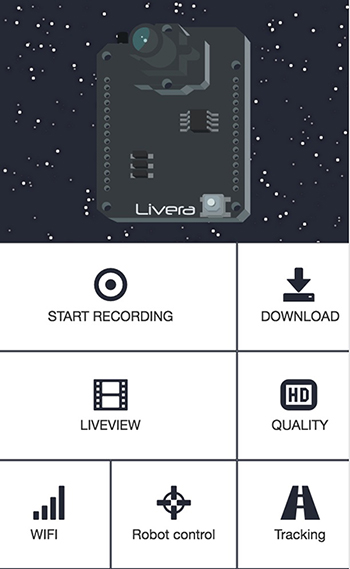

Quick Start/User Manual
What is Livera

Welcome to start the new adventure with Hicat!! Happy hacks. :p
In a nutshell, Livera by Team HiCat is an open source hardware project which aims to bring machine vision features to the Arduino community. It is also a good platform for building visual driven robotics.
We've provided libraries which contain machine vision related APIs such as:
- 720hd video and photo capturing&processing
- OpenCV enabled Color-Sensitive and Object-Tracking.
- Wifi enabled wireless control (this can work with the iot!)
- Image capturing and data recording onto the onboard sd card
- Mobile observation and manipulation from our custom apps( web-based and native)
- Programmable and open source.
what Livera could do:

Future development:
It is always exciting to think about the future, as for the buzz of AI recently, undeniably it is the future.
When we saw the article of How a Japanese cucumber farmer is using deep learning to sort cucumbers. we think Livera should be best machine vision front-end part for image capturing and openCV pre-processing.
With the natural language virtual assistant and cloud deep learning platfrom, we could just teach the robot how to perform task by speaking, or let him learn by watching, that will be really awesome, like people could finally owns their own real world R2D2 or BB8.
In conclusion:
- Theme based advance
robotic kit. - More advance image capturing and processing capability
- Natural language virtual assitant
- Image streaming and processing
cloud
User Manual
Power: LIVERA allows mulitpul ways of power supply
- 3.7V lipo battery (No higher voltage)
- USB cable (2.0)
- I/O port
Hock Up Camera Module: The Livera core package contains 3 main conponent, 1. Livera Board 2. Camera Module 3. Extendable Cable.
You could choose to directly plug in the Camera Module on to Livera Board, or use extendable cable to extend the Camera Module in order to build Robot.
Connect to Livera: Power up Livera, give a few second to boot, the WIFI access point hostname hicat_xxxxxx should show up on your PC/MOBILE's wifi list. The default wifi password is: 88888888
Once you connected to LIVERA, you could Telnet()
Test Video Feature: LIVERA has two video streaming mode RTSP/MJPEG, RTSP stands for advence H.264 raw video streaming which works well with our Android app or any video Player which accepted RTSP streaming protocol. MJPEG would be a WEB friendly video format.
Once you successfully boot up Livera and accessing into the WIFI, you can connect to the web app we built to test the board function.
Go to web page 192.168.1.1/www/mmc/webapp/index.html or the simplify version web page 192.168.1.1.
Once the web page show up, hit the LiveView button to get video stream from Livera.
Access into Linux(3518E): Livera accept telnet connections, when you connected to Livera with WIFI, you could open up your terminal, type:
telnet 192.168.1.1 //if you let the board connected to the router you should find the correct IP address
//User:root
//passward:(hit return directly)
cd /hicat/ //firmware directory
./launch.sh //Main script for main operation: video setting/mount sd card
cd /hicat/www/mmc //SD card directory
Hardware
Livera
Motor Driver
The Robot kit Assembly Guide
Software
Firmware
How to burn the firmware to flash
you must have a hicat board with a uboot already burned.
then connect the UART0 on the ARM9 Hisiv chip. and then use the command as below[recomendly using Hyper Terminal to finish this]:
loady 0x82000000
then send file on Hyper Terminal with xmodern protocal. choose the uImage file under https://github.com/9crk/libhisiv/opt/
sf probe 0
sf erase 0x100000 0x300000
sf write 0x82000000 0x100000 0x300000
loady 0x82000000
then send the rootfs file to the board.
sf erase 0x400000 0xC00000
sf write 0x82000000 0x400000 0x500000
setenv bootargs 'mem=32M console=ttyAMA0,115200 root=/dev/mtdblock2 rootfstype=jffs2 mtdparts=hi_sfc:1M(boot),3M(kernel),12M(rootfs)'
setenv bootcmd 'sf probe 0;sf read 0x82000000 0x100000 0x300000;bootm 0x82000000'
saveenv
then reboot the board or execute 'reset' command.
How to use opencv Demo
1. clone this repo
2. then install the compiler
3. compile the apps under 'app' dir with ./build.sh
4. copy the app dir to the board
5. copy the opt/opencvlib dir to the board at /www/mmc/opencv/opencvlib
6. cd app && source env.sh
7. execute './capture' to capture an image named 'myImage.jpg'
8. execute './match model.jpg' to find the object model.jpg in the camera.
9. then you can browser the result hi.jpg on http://192.168.1.1/mmc/opencv/app/hi.jpg
About rtspserver and libhisiv.a
rtspserver have two demo: one is modified from live555 project. ( live555MediaServer ) * source code is in https://bitbucket.org/zhouhua/hicat_rtspserver * play Address: rtsp://192.168.1.1/hicat.264 one is a http-rtp based program. with only binary file provided. ( http-rtpServer ) * play Address: http://192.168.1.1/cgi-bin/video.sdp but must with zwebs running first.
you can rename any of it as 'rtspserver',then it will be run in the next boot. or run /hicat/launch.sh restart to restart all services. libhisiv.a contains all the camera function.as below:
extern int venc_exit(int n);//0
extern int venc_init(int resolve);//0:720P 1:QVGA 2:VGA
extern int venc_requestIDR();
extern int venc_getFrame(char* buffer,int *datalen);//get h264 frame data.
extern int venc_rotate(int dir);//0:no rotate 2:180 digree rotate.
extern int venc_getYUV(int mode,char*buff);//get YUV data.
How to install software pack
- execute 'lrz' command to send libhicat/opt/hi_sd.sh into the board (any where)
- format the sd card with fat32 format in default param. or use mkfs.vfat on Linux OS
- then execute
chmod +x hi_sd.sh && ./hi_sd.sh, the board will reboot
How to upgrade 1. Formating the SD card with vfat or fat32 mode. 2. then copy the hicat2016xxxx.tar package to the SD card. 3. press the reset button (RST_PBC) 4. connect the power supply. 5. wait for the board reset again.
What's more zwebs https://9crk@bitbucket.org/zhouhua/hicat_zwebs.git
How to use programming with serial port on Hisiv libSerial https://github.com/9crk/libSerial.git
Source Code can be view here
Android
Web app

The web app provides functions like Video recording, Live streaming,
What an amazing feature about livera is it could serve web pages as web app thanks to the file streaming server, in Livera's demo, we've provided a single page web app which based on VUE.js, the app would work as Livera's command panel.
The server also provide REST API which allows you to communicate with Livera through AJAX
Example Code
Image Capturing
1. Image capture within Arduino
#include "hicat.h"
void setup()
{
hicat.begin();
char name[16] = "0.jpg";
for (int i = 0; i < 8; i++)
{
name[0] = '0' + i;
hicat.snapshot(name);
delay(10);
}
}
void loop()
{
}
Robot Kit
// hicat robot demo
// get SerialCommand library from https://github.com/hicat-tech/Arduino-SerialCommand
#include
#include
int PWM1 = 9; // control servo
int PWM_CE = 11; // servo enable
int AIN1 = 4; // control motor1
int AIN2 = 5; // control motor1
int AIN3 = 6; // control motor2
int AIN4 = 7; // control motor2
int BIN3 = A2; //control laser
int BIN4 = A3; //control laser
Servo myservo;
SerialCommand sCmd;
uint8_t camera_angle = 120;
uint8_t camera_angle_range[] = {
60, 150
};
uint8_t laser_is_on = 0;
void setup() {
Serial.begin(115200);
Serial1.begin(115200);
// while (!Serial);
Serial.println("----- Car ----");
// initialize the digital pin as an output.
pinMode(AIN1, OUTPUT);
pinMode(AIN2, OUTPUT);
pinMode(AIN3, OUTPUT);
pinMode(AIN4, OUTPUT);
pinMode(BIN3, OUTPUT);
pinMode(BIN4, OUTPUT);
digitalWrite(BIN3, LOW); // turn off LASER
digitalWrite(BIN4, LOW);
pinMode(PWM_CE, OUTPUT);
myservo.attach(PWM1);
digitalWrite(PWM_CE, HIGH);
myservo.write(camera_angle);
digitalWrite(PWM_CE, LOW); //disable servo
// Setup callbacks for SerialCommand commands
sCmd.addCommand("laser", trigger_laser);
sCmd.addCommand("camera", adjust_camera);
sCmd.addCommand("motor", set_motor);
sCmd.setDefaultHandler(unrecognized);
}
// the loop routine runs over and over again forever:
void loop() {
sCmd.readSerial((Stream&)Serial1);
}
void trigger_laser()
{
if (laser_is_on) {
digitalWrite(BIN3, LOW); // turn off LASER
laser_is_on = 0;
Serial.println("laser off");
}
else {
digitalWrite(BIN3, HIGH); // turn on LASER
laser_is_on = 1;
Serial.println("laser on");
}
}
void adjust_camera()
{
char *param;
param = sCmd.next();
if (!strcmp(param, "down")) {
if (camera_angle < camera_angle_range[1]) {
camera_angle += 10;
digitalWrite(PWM_CE, HIGH);
myservo.write(camera_angle);
digitalWrite(PWM_CE, HIGH);
}
}
else if (!strcmp(param, "up")) {
if (camera_angle > camera_angle_range[0]) {
camera_angle -= 10;
digitalWrite(PWM_CE, HIGH);
myservo.write(camera_angle);
digitalWrite(PWM_CE, HIGH);
}
}
Serial.print("camera angle: ");
Serial.println(camera_angle);
}
void set_motor()
{
char *param;
int16_t left = 0;
int16_t right = 0;
param = sCmd.next();
if (param == NULL) {
return;
}
left = atoi(param);
param = sCmd.next();
if (param == NULL) {
return;
}
right = atoi(param);
Serial.print("motor ");
Serial.print(left);
Serial.print(" ");
Serial.println(right);
if (left > 30) {
analogWrite(AIN2, left);
digitalWrite(AIN1, LOW);
} else if (left < -30) {
analogWrite(AIN2, 255 + left);
digitalWrite(AIN1, HIGH);
}
else {
digitalWrite(AIN1, LOW);
digitalWrite(AIN2, LOW);
}
if (right > 30) {
analogWrite(AIN3, right);
digitalWrite(AIN4, LOW);
}
else if (right < -30) {
analogWrite(AIN3, 255 + right);
digitalWrite(AIN4, HIGH);
}
else {
digitalWrite(AIN3, LOW);
digitalWrite(AIN4, LOW);
}
}
// This gets set as the default handler, and gets called when no other command matches.
void unrecognized(const char *command) {
Serial.println('?');
}
Advance
API GUIDE
1.WEB API
The Web API contains a set of REST API in order to interact with LIVERA in a convenient way through AJAX or URL.
AJAX Example:
var xhr = new XMLHttpRequest(){
xhr.open('GET', '/hicat/videoServer?mode=0', true)
xhr.onload = function() {
answer = JSON.parse(xhr.responseText)
console.log(answer1) }
}
xhr.send()
}
1.Set up Video Streaming Mode: This API allows you to swith between RTSP and MJPEG streaming mode, be careful that Video Record API only works under RTSP Mode, and Screen Shot API only works under MJEPG Mode.
/hicat/videoServer?mode=0
mode=0: RTSP Server Start
mode=1: MJPEG Mode
2.Station Mode: Let Livera link to local wifi router
/hicat/stationMode?ssid=xxxxx&password=xxxxxxx
return messages:
success: none return
error:{"result":"ERROR"}
3.WIFI Access Point: Make Livera to AP mode
/hicat/apMode?ssid=xxxxx&password=xxxxxxx
return messages(object):
success: none return
error：{"result":"ERROR"}
4.Set Livera time: Synchronous time with Livera, the time also affect to the default video name.
/hicat/setTime?time=%d-%d-%d-%d-%d-%d
Example: /hicat/setTime?time=2018-09-09-01-01-01
success：{"result":"OK"}
error：{"result":"ERROR"}
5.Get Video Download Links: This API will return a JASON format({"result":"OK","files":["name":"xxxxx","name":"xxxxx"]}) message about all the file within video folder in SD Card. Once you get the fileName you could just go to this url http://192.168.1.1/mmc/video/xxxxx.264 to download it(might figure your IP address under station mode).
/hicat/files
success:{"result":"OK","files":["name":"xxxxx","name":"xxxxx"]}
error:{"result":"ERROR"}
6.Video Record: This API allows you to record and delete the video and auto save into the default video folder in SD card.
/hicat/record?save=1
/hicat/record?del=xxxxxxxx.h264
save=1: start recording
save=0: stop recording and save
del=xxxxxxxx.h264: delete xxxxxxxx.h264
success：{"result":"OK"}
error：{"result":"ERROR"}
7.Video Setting: Switch video angle, video resolution and video fps.
/hicat/setCamera?resolve=1&rotate=0&fps=20
success：{"result":"OK"}
error：{"result":"ERROR"}
//only work under mjpg mode
8.Snapshot: snap shot form one of the frame form MJPEG stream. We suggest to make the direction to /www/mmc/video/ coz the photo info could be receive under /hicat/files API.
/hicat/snapshot?name=xxx.jpg&dir=/www/mmc/video/
success：{"result":"OK"}
9.For test: test api, do nothing but test.
/hicat/test
success：{"result":"OK"}
2.Embedded Linux API
Detail information could be view under our github libhicat, There are instructions guide you through development tools set up and workflow, please have a look.
#ifndef _LIBHISIV_H_
#define _LIBHISIV_H_
#ifdef __cplusplus
extern "C" {
#endif
int venc_exit(int n);
int venc_init(int resolve);//0:720P 1:QVGA(320*240) 2:VGA(640*480)
int venc_init_more(int resolve,int mode,int fps);//resolve: 0/1/2 1280*720/320*240/640*480 mode: 0/1 H264/MJPEG
int venc_requestIDR();//request IDR frame
int venc_getFrame(char* buffer,int *datalen,int *pts,int *type);
int venc_snap(char* buff,int xRes,int yRes);
int venc_getYUV(int mode,char*buff);//mode=0 Y mode=1 UV mode = 3 YUV420(SP)
int venc_rotate(int dir);
//for audio
extern int aenc_init(int mode);// 0/1 PT_LPCM/AAC/
extern int aenc_getFrame(char* buff);
extern int aenc_exit();
//jpeg to http
extern int libyuvdist_startYuvDistService(int port);
extern int libyuvdist_updateYuv(int iHandle,char* data,int len,int seq,unsigned long timeStamp);
extern int libyuvdist_stopYuvDistService(int iHandle);
extern int libyuvdist_setSettingCallback(int iHandle,int func);//int func(int resX,int resY,int fps)
#ifdef __cplusplus
}
#endif
#endif
3.Arduino Libray API
The Arduino library wraps the web api, using serial communication and curl to communicate and send command to the video core(HI3518E). There are also example codes could be find in github
#ifndef _HICAT_H_
#define _HICAT_H_
#include <Arduino.h>
class HiCat
{
public:
HiCat();
int begin(void);
/**
* Take a picture
*
* @param file_name picture name
* @return 0 - OK, otherwise - error code
*/
int snapshot(const char *file_name);
/**
* Start to record a video which is saved at /www/mmc/video/
*
* @return 0 - OK, otherwise - error code
*/
int record();
/**
* Stop to record a video
*
* @return 0 - OK, otherwise - error code
*/
int stop_recording();
/**
* Set camera format
*
* @param resolution 0 - 1280*720, 2 - 640*480, 1 - 320*240
* @param rotation 0 - no rotation, 1 - 180 degree rotation
* @param fps frame per secord from 1 to 25
* @return 0 - OK, otherwise - error code
*/
int set_camera(int resolution, int rotation, int fps);
/**
* Set Wi-Fi mode
*
* @param mode 0 - AP mode, 1 - Station mode
* @param ssid SSID
* @param password password
* @return 0 - OK, otherwise - error code
*/
int set_wifi(int mode, const char *ssid, const char *password);
/**
* Run a shell command
*
* @param command shell command
* @return 0 - OK, otherwise - error code
*/
int run(const char *command);
private:
void prepare_web_command();
int read_result();
};
extern HiCat hicat;
#endif // _HICAT_H_
HI3518EV100 SDK
Content within SDK:
- linux
- file system
- Hi3518E Documentation/Hardware design reference
- download address: download link verifycode:
kspcdecode password:lk87612umzvcb01qqsalv
openCV
The way To do black-line tracking.
1.check out the files.
~/libhicat/app$ ls__
build.sh capture.cpp hi.html match model2.jpg myImage.jpg capture env.sh hi.jpg match.cpp model.jpg
2.copy capture.cpp as a demo
cp capture.cpp lineTrack.cpp
3.modify build.sh, add content below
arm-hisiv100nptl-linux-g++ lineTrack.cpp ../lib/libhisiv.a -I../include -lpthread -lm -o lineTrack
4.compile
./build.sh
#include<stdio.h>
#include<stdlib.h>
#include<unistd.h>
#include"libhisiv.h"
int main(int argc,char* argv[])
{
char data[1280*720];
int len;
int i;
len = venc_getYUV(0,data);
int x,y;
int result[10];
for(i=0;i<10;i++){
result[i] = 0;
}
for(i=0;i<10;i++){
for(y=635;y<(635+10);y++){
for(x=i*72;x<(i+1)*72;x++){
result[i]+=data[y*1280+x];
}
}
result[i] = result[i]/(72*10);
}
for(i=0;i<10;i++){
result[i] = 0;
printf("result = %d\n",result[i]);
}
}